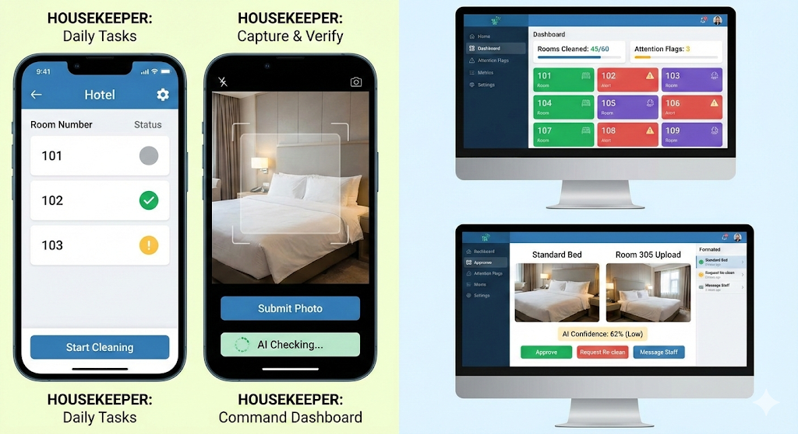
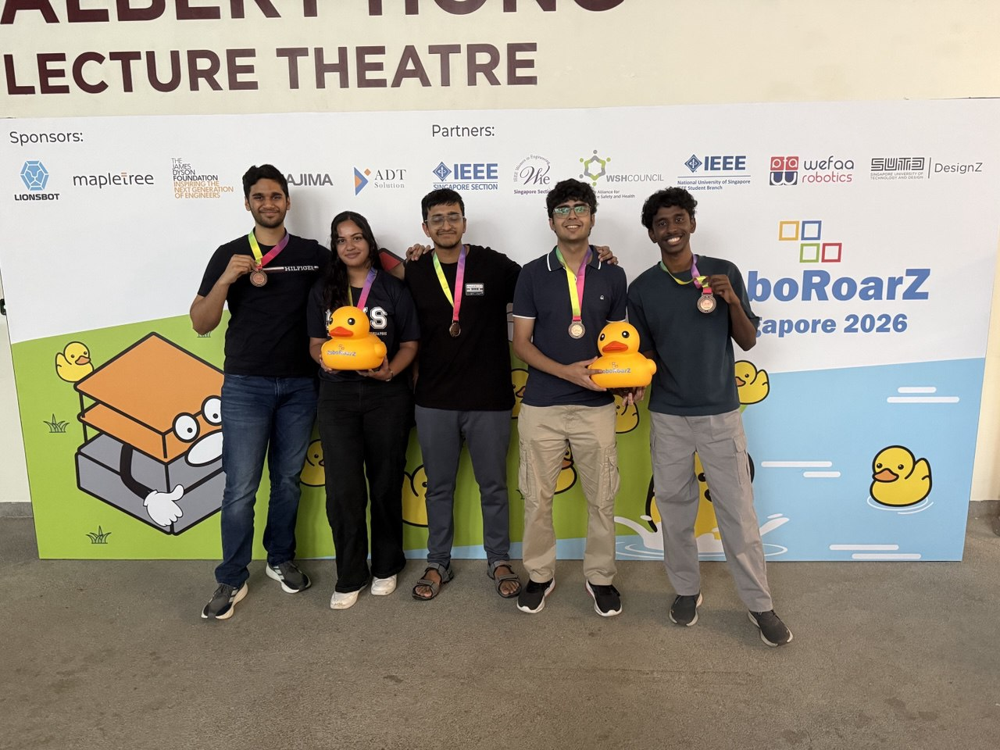

// 01 — Overview
What Is It?
The AI Bed Checker is a real-time computer vision system that determines whether a hotel bed has been made to standard. A camera feed is processed through a fine-tuned YOLOv8 model that classifies the bed state and highlights any issues — wrinkled sheets, displaced pillows, missing covers — allowing housekeeping supervisors to run automated checks across dozens of rooms without manual inspection.
The project was built end-to-end: dataset collection and annotation, model training, evaluation, and a lightweight inference demo. It won 1st Place at the RoboRoarZ AI Challenge organised by the Singapore University of Technology and Design (SUTD) in 2026.
// 02 — Gallery
Photos & Demo

AI Bed Checker — live inference preview

1st Place — RoboRoarZ AI Challenge, SUTD 2026
.jpg)
Building the AI Bed Checker at the hackathon
// 03 — Technical Stack
How It Works
MODEL
FRAMEWORKS
PIPELINE
Dataset Collection
Captured and curated images of beds in various states — made, unmade, partially made — and annotated them with bounding boxes and class labels.
Model Training
Fine-tuned YOLOv8 on the annotated dataset using transfer learning. Optimised for accuracy and inference speed suitable for real-time use.
Inference & Demo
Built a live demo pipeline that takes a camera feed or image input and outputs a classification with confidence score and visual bounding boxes.
// 04 — Documents & Files
Resources
// 05 — Results & Impact
Outcome
1st
Place — RoboRoarZ AI Challenge, SUTD 2026
YOLOv8
State-of-the-art real-time object detection backbone
End-to-end
Dataset → Training → Live inference pipeline